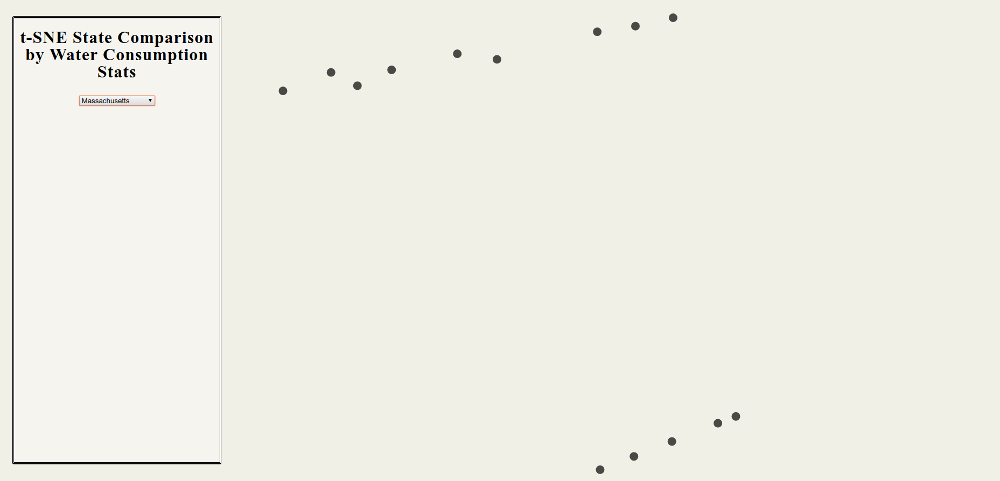

Screencast available on YouTube here
We have outlined our Process Book henceforth. It has been organized to give readers a comprehensive chronological summary of the decisions and experiments we undertook, along with outlining the errors we made along the way and any modifications to the original proposal.
For our project, we have made use of a very interesting hierarchical means of representation- practical application of the circle packing algorithm to create a Circle Packing graph, a variant of the TreeMap means of representation. This family of graphs excels at visualizing hierarchical data, and we sought to apply these principles to showing the disparity in 6 categories of water use throughout the 3,412 counties in the United States.
We chose the circle packing graph to represent our data for a few reasons:
After we manipulated the dataset, cleaned it, and added new columns corresponding to region types in the USA (New England, etc.) we realized it became very nested and we needed a graph type that would be able to handle this level of nesting without sacrificing readibility.
We were able to combine the distribution of a county's individual water use across the categories specified in
the dataset to be presented as an onhover interaction when they hover over a particular county's
value. Because of this, the user can interact with and visualize the hierarchy while not losing sight over
individual objects easily.
We researched for the most effective visualizations for highly nested datasets like ours. Immediate results that came up were to use a Tree Map or similar graph. However, reading Collins et al. helped us gain a very strong familiarity with the underlying mechanics of a circle packing graph. When trying to design a visualization using the algorithm however, we read Dai et al. a CHI 2006 paper that described various methods of encoding the circle packing and how to design a scaling function that wouldn't be unproportional to the data being represented.
We chose the subject of water use because of how fresh water is a dwindling resource- this article talks about how in countries like New Zealand, Germany, Australia, and the Czech Republic, just to name a few, water is more expensive than wine or beer. As scientists, we believe that this disparity is ridiculous given how all of these countries are all either G6 or G7 countries, considered to be "developed". Water should be a freely accessible resource that is regulated and whose infrastructure is developed by the people to generate a public supply system. The United States employs a similar system, having created a public supply water system that is centralized to every state.
The USGS dataset that we are using for this project consists of 140+ individual attributes corresponding to a particular county's water consumption across various sectors. We employed the power of the Pandas module in Python 3 to reduce the dimensionality of this dataset to correspond to particular interests of ours. For this project, we were interested in comparing the distribution of water consumption across the 6 sectors mentioned in the dataset. They are:
We computed values for each of these sectors given the much more specific data provided in the dataset. This was done through the synthesis of each specific attribute for a sector.
Initial exploration was conducted upon two major things; the graph type and the dataset.
We experimted with the principles of a circle packing graph to identify key factors that would help in our specific
situation. For example, one of the adjustments we made was that a user cannot see the entire hierarchy from the
start; they interact with the visualization to reveal only the contents of that depth. This depth was a
feature of d3.js that we really edited for this project. We wanted to work with the depth variable to
layer it such that you weren't presented with the 3000+ circles representing each county. We realized that having
this view would be utterly confusing and not communicate the data at all. It would instead just clog up the visual
space with all of the circles and a lack of understanding what each meant. So, we did it such that you can only see
the circle of the current depth of the tree you're in. It's an interesting design philosophy as we were reading
papers mentioned earlier on the design of well done circle packing graphs and the ideology of showing only the
contents of a certain node's depth was mentioned as techniques for efficient communication given large datasets.
Screenshots are to come but basically we originated with a Tree Map that corresponded to the data as a sort of "test" in the tree-based hierarchy visualizations. This evolved into an unlabeled circle packing graph to an interactive, multi-tier one with our model of depth based perception.
Here's a very initial exploration into our dataset that helped us readjust our perceptions.
Since we knew that circle packing graphs were subsets of treemaps, we wanted to see what a treemap of our dataset
would look like. Here's the catastrophe that resulted:

Data was just being presented everywhere, with there being way too many points shown in the top level view. We
noticed this with other visualizations too, how they had implemented circle packing graphs or other hierarchical
means of visualization but had shown every single unit in an interactive manner from the root node. That just
overwhelmed us. We made the conscious decision here that in our circle packing graph, we would only show the current
depths' contents, and provide the interactivity to access deeper or go higher up. This level of interactivity makes
the hierarchy easier to understand and navigate, and reduces the level of visual clutter present in our treemap.
In class, we have talked about other types of agglomerative clustering such as t-sne and its dementionality reduction ability. Our initial thoughts were that it would work very well considering the numerous feilds and categories of water usage in our dataset. This is what resulted: 
Although it does do its job and clusters points close to each other spacially. But not only is it increadibly
slow, but there is no useful knowledge or data that can be derived from this with out more knowledge from other datasets. We can inference that
districts and counties that use more water are more likely to use it based on the main area of work (agricultiral...) around the state.
Rather than elaborate purely in text about our design choices, here are some images captured throughout the developement with explanations of our perspective at that point.

This was when we were first able to load the dataset into the frontend to manipulate. We exported a
JSON object from the Pandas dataframe for use in creating the circle pack visualization.

Then we drew a circle in d3 to start placing data on the circle pack. We were having some issues with
designing the hierarchy within the dataset to make sense with what was needed to set up the circle pack, and were
getting some errors.

Shortly after being able to load the dataset in and show it visually, we were able to create a very basic
circle packing visualization. This iteration of the project had no interactivity whatsoever, and presented all 3000+
datapoints from the top-level view. This had to go.

Choosing a proper colorscale was also of importance to us. We selected this 6 class color scheme to be the pie
chart's color scheme once we got to that step.

The next big update. This vis has the circle pack done and the initial pie chart working. The issue was with
the labels. They really got in the way of seeing what the data represented. We realized it would be best to rename
the attributes and use the pie chart on the right as a legend. Also, the rendering was ridiculously slow. We ran
various benchmarks like Google Lighthouse on the site to get a more comprehensive understanding of what was causing
the bottleneck. It was found that the lag was being caused by how whenever a user clicked in or out of a
depth it would redraw the entire graph instead of just the area they were going into. This was a major
red flag for the high latency and we prioritized redesigning the rendering system such that it would only load what
was in the current depth.

This is getting pretty close to wrapping up. However, one of the issues we had was the coloring of
domestic attribute for domestic water consumption was too similar to the coloring of the circle around
it. Thus, it was decided to change the coloring of domestic to a more green shade so it would be uniquely
represented. The rendering is significantly faster due to optimizations in what items are being drawn at what
depths.

This is the final product. We removed the attribute names in the graph, it was just placed in such a poor
fashion we gave up that direction and associated the words with their respective colors in the legend. Furthermore,
the performance was optimized further leading it to run quite smoothly despite having to access a dataset with over
3000 data points. Also, we added a search functionality that allows a user to search for any region, state, or
county and navigate to that particular circle.
Our implementation of the circle packing graph was novel in that our approach to using the depth
component for the purposes of faster loading and better representation/interaction with the data. We designed this
approach because of the size of our dataset making the visualization absolutely massive in regards to the overall
tree depth. The graph was loading really slowly as it had to redraw every single circle when a region was clicked
on, however when we lifted this instantiation to a more sequential level, only loading the circles inside a clicked
circle's "children". This approach allows for readers to have a more interactive experience. Also, we
added more statistics for individual county visualization by adding a pie chart corresponding to the distribution of
each sector's water consumption in regards to the county's overall water consumption records across those 6 sectors.
However, one interesting takeaway is an understanding about how to represent data given its record. Some datasets are incredibly nested and require a treemap in order to be visualized at all. You need to actually display that hierarchy; its a feature of your dataset and is a really interesting tool to explore. Seeing how a tree can be visualized, whether using a circle packing graph or other means of representation teaches you a lot about the dynamics of a hierarchy and how we can best understand these large collections of connected information and how it all fits together. The search function is really nice to use as it allows people to access a particular depth right off the bat instead of having to navigate around for it. The combination of the pie charts to show the distribution of water consumption for that county was a bold choice as it had been shown previously in papers that pie charts are not effective tools for visual communication, however given the limited space of a circle, we feel that it is a useful approach as the distribution is shown through the pie chart, and for this particular distribution, the individual values matter less, but their relative proportion in regards to the other values is what is important. Pie charts can show this distribution and as such we chose to use them. It allowed us to resize each of the circle to be based on population- allowing for even another level of insight. Users can view
Because of these reasons, we believe our use of the pie chart is successful for this particular use case.
Next steps for this project definitely include getting more insights into the water consumption of humans- after learning about facets and multi-tiered visualizations it would be really interesting to break down by county per capita which counties make use of water well and which don't.